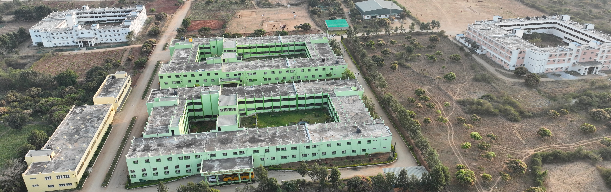

<div class="mx-5 my-2">
    <h1 class="aboutus_title text-center p-2">Contact Us</h1>
    <div class="row">
        <div class="col-lg-8 mb-5">
            
        </div>
        <div class="col-md-3 mx-5 mb-5">
            <div class="bg-success border-5 border-warning card py-5">
                <h3 class="text-center align-middle text-light ">B.Sc. (Hons.) Agriculture Application Form</h3>
                <button type="button" class="btn btn-light fs-6 mx-5" (click)="redirectToCourseOfferedPage()">Apply
                    Online</button>
               
            </div>
        </div>
    </div>

    <div>
        <h5 class="fw-bold aboutus_title">அதியமான் வேளாண்மைக் கல்லூரி மற்றும் ஆராய்ச்சி </h5>
        <h5 class="fw-bold aboutus_title"> ADHIYAMAAN COLLEGE OF AGRICULTURE AND RESEARCH</h5>
        <h6 class="aboutus_title">Affiliated to TamilNadu Agricultural University ( Affiliation No.E1/A.E.R.I/02711/2016
            ) <br>
            Shoolagiri to Berigai Road, Athimugam Village, Krishnagiri District 635105.</h6> <br>
        <h6 class="aboutus_title">Phone Number: +91 – 6380277180, +91 – 9442006269, +91 – 9442219990 <br>
            Email: deanacar&#64;tnau.ac.in, office&#64;acar.ac.in</h6>
    </div>

</div>